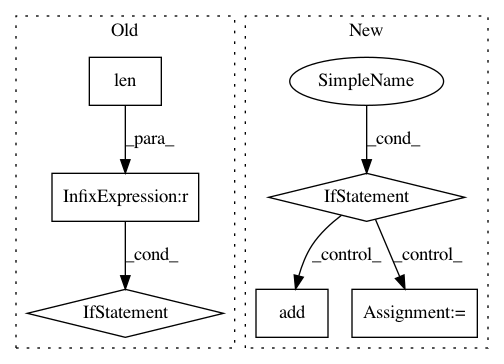

a5f83e8f1e29c62070333d6ce48009e2fdb323b9,inferno/net.py,NeuralNet,initialize_callbacks,#NeuralNet#,192
Before Change
names_and_cbs = self._get_callbacks_and_names(callbacks)
names = list(zip(*names_and_cbs))[0]
if len(names) != len(set(names)):
// TODO: more useful message
raise ValueError("There are callbacks with duplicate names.")
callbacks_ = []
for name, cb in names_and_cbs:
params = self._get_params_for("callbacks__{}".format(name))
cb.set_params(**params)
After Change
callbacks_ = []
for name, cb in self._yield_callbacks():
if name in names_seen:
raise ValueError("The callback name "{}" appears more than "
"once.".format(name))
names_seen.add(name)
params = self._get_params_for("callbacks__{}".format(name))
if isinstance(cb, type): // uninitialized:
cb = cb(**params)
else:
cb.set_params(**params)
cb.initialize()
callbacks_.append((name, cb))
In pattern: SUPERPATTERN
Frequency: 3
Non-data size: 6
Instances
Project Name: dnouri/skorch
Commit Name: a5f83e8f1e29c62070333d6ce48009e2fdb323b9
Time: 2017-07-19
Author: benjamin.bossan@ottogroup.com
File Name: inferno/net.py
Class Name: NeuralNet
Method Name: initialize_callbacks
Project Name: probcomp/bayeslite
Commit Name: 047c1206650c6524075e6509809f9810f91548d4
Time: 2015-08-25
Author: riastradh+probcomp@csail.mit.edu
File Name: src/read_csv.py
Class Name:
Method Name: bayesdb_read_csv
Project Name: osmr/imgclsmob
Commit Name: 00c06ff2b04c3c991b6fbe1281ff3eede9ca4f94
Time: 2018-10-29
Author: osemery@gmail.com
File Name: gluon/gluoncv2/models/darknet.py
Class Name: DarkNet
Method Name: __init__